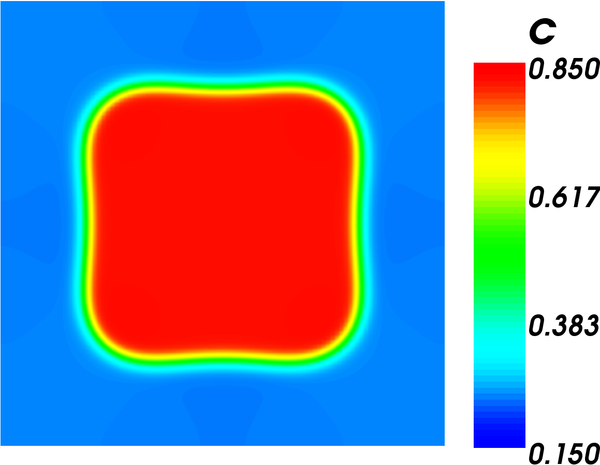
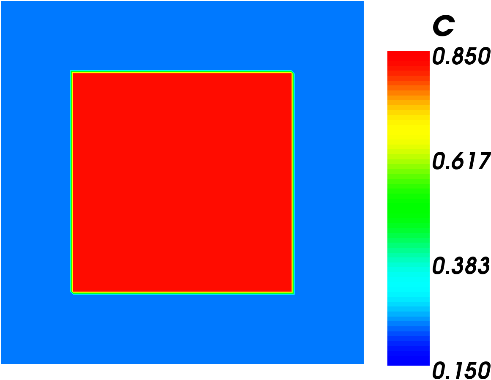

Step 1: Make a Simple Test Model
The input file for this step can be found here: s1_testmodel.i
Input File Blocks
We are going to start with the simplest input file we can. We will add on more features and make the model more accurate as we go. We will be using the Split Cahn-Hilliard method because it converges faster than the direct method. The basic blocks we need are: Mesh, Variables, ICs, BCs, Kernels, Materials, Precoditioning, Executioner, and Outputs.
Mesh
The mesh block is going to create a two dimensional mesh that is 25nm × 25nm and has 100 × 100 elements.
[Mesh]
# generate a 2D, 25nm x 25nm mesh
type = GeneratedMesh
dim = 2
elem_type = QUAD4
nx = 100
ny = 100
nz = 0
xmin = 0
xmax = 25
ymin = 0
ymax = 25
zmin = 0
zmax = 0
[]
Variables
Because we are using the split form, two variables are defined, the mole fraction of chromium and the chemical potential.
[Variables]
[./c] # Mole fraction of Cr (unitless)
order = FIRST
family = LAGRANGE
[../]
[./w] # Chemical potential (eV/mol)
order = FIRST
family = LAGRANGE
[../]
[]
ICs
To start off we want to check our second expectation. That is, that the surface will minimize its interface region by forming circular or straight line regions. To do this, we will use a Bounding Box Initial Condition with the equilibrium concentrations we calculated from the free energy density curve.
[ICs]
# Use a bounding box IC at equilibrium concentrations to make sure the
# model behaves as expected.
[./testIC]
type = BoundingBoxIC
variable = c
x1 = 5
x2 = 20
y1 = 5
y2 = 20
inside = 0.823
outside = 0.236
[../]
[]
BCs
It is common in phase field simulations to use periodic boundary conditions.
[BCs]
# periodic BC as is usually done on phase-field models
[./Periodic]
[./c_bcs]
auto_direction = 'x y'
[../]
[../]
[]
Kernels
We will use the kernels specified for the split Cahn-Hilliard equation. Note that here we name the free energy function, the mobility, and the gradient energy coefficient "f_loc", "M", and "kappa_c" respectively. These have the same names in the materials block.
[Kernels]
[./w_dot]
variable = w
v = c
type = CoupledTimeDerivative
[../]
[./coupled_res]
variable = w
type = SplitCHWRes
mob_name = M
[../]
[./coupled_parsed]
variable = c
type = SplitCHParsed
f_name = f_loc
kappa_name = kappa_c
w = w
[../]
[]
Materials
The materials block defines the equations and constants in the model. This is where we will define , , and in MOOSE. To simplify things right now, we are going to define as a constant value rather than a function. We will also be doing unit conversions in the materials block. Note that each value has the same name as in the kernels block.
In addition to the unit conversions, it was accidentally discovered that the convergence properties can be improved by using a scaling factor, . Both and are multiplied by , while is multiplied by the inverse of . This does not change the solution, but it does seem to help the convergence.
[Materials]
# d is a scaling factor that makes it easier for the solution to converge
# without changing the results. It is defined in each of the materials and
# must have the same value in each one.
[./constants]
# Define constant values kappa_c and M. Eventually M will be replaced with
# an equation rather than a constant.
type = GenericFunctionMaterial
block = 0
prop_names = 'kappa_c M'
prop_values = '8.125e-16*6.24150934e+18*1e+09^2*1e-27
2.2841e-26*1e+09^2/6.24150934e+18/1e-27'
# kappa_c*eV_J*nm_m^2*d
# M*nm_m^2/eV_J/d
[../]
[./local_energy]
# Defines the function for the local free energy density as given in the
# problem, then converts units and adds scaling factor.
type = DerivativeParsedMaterial
block = 0
f_name = f_loc
args = c
constant_names = 'A B C D E F G eV_J d'
constant_expressions = '-2.446831e+04 -2.827533e+04 4.167994e+03 7.052907e+03
1.208993e+04 2.568625e+03 -2.354293e+03
6.24150934e+18 1e-27'
function = 'eV_J*d*(A*c+B*(1-c)+C*c*log(c)+D*(1-c)*log(1-c)+
E*c*(1-c)+F*c*(1-c)*(2*c-1)+G*c*(1-c)*(2*c-1)^2)'
[../]
[]
Preconditioning
The split Cahn-Hilliard has the best convergence properties when we use the Newton solver. The newton solver always requires preconditioning.
[Preconditioning]
[./coupled]
type = SMP
full = true
[../]
[]
Executioner
The executioner block tells MOOSE how to solve the problem. Many of the values in this block are arbitrary and you can experiment with changing them to see how they change the solution. See the the Executioner and Preconditioning pages for more information on these systems.
Right now our main interest is in seeing if the model is working. So we shortened the time that the simulation runs to just be long enough to see if the grain is becoming circular.
[Executioner]
type = Transient
solve_type = NEWTON
l_max_its = 30
l_tol = 1e-6
nl_max_its = 50
nl_abs_tol = 1e-9
end_time = 86400 # 1 day. We only need to run this long enough to verify
# the model is working properly.
petsc_options_iname = '-pc_type -ksp_grmres_restart -sub_ksp_type
-sub_pc_type -pc_asm_overlap'
petsc_options_value = 'asm 31 preonly
ilu 1'
dt = 100
[]
Outputs
The outputs block lets us decide what MOOSE tells us about the simulation. We will output the initial condition so we can compare it to the final condition.
[Outputs]
exodus = true
console = true
print_perf_log = true
output_initial = true
[]
Simulation Results

Final result of Simple Test Model

Initial condition of Simple Test Model.
The first image to the right shows the initial condition of this simulation. The second image shows the end result of the simulation. The result shows that the chromium phase's corners are rounding out and the shape is becoming more circular. This is exactly what we would expect to happen as the surface tries to reduce its free energy. This result is a promising sign that our simulation is working correctly.